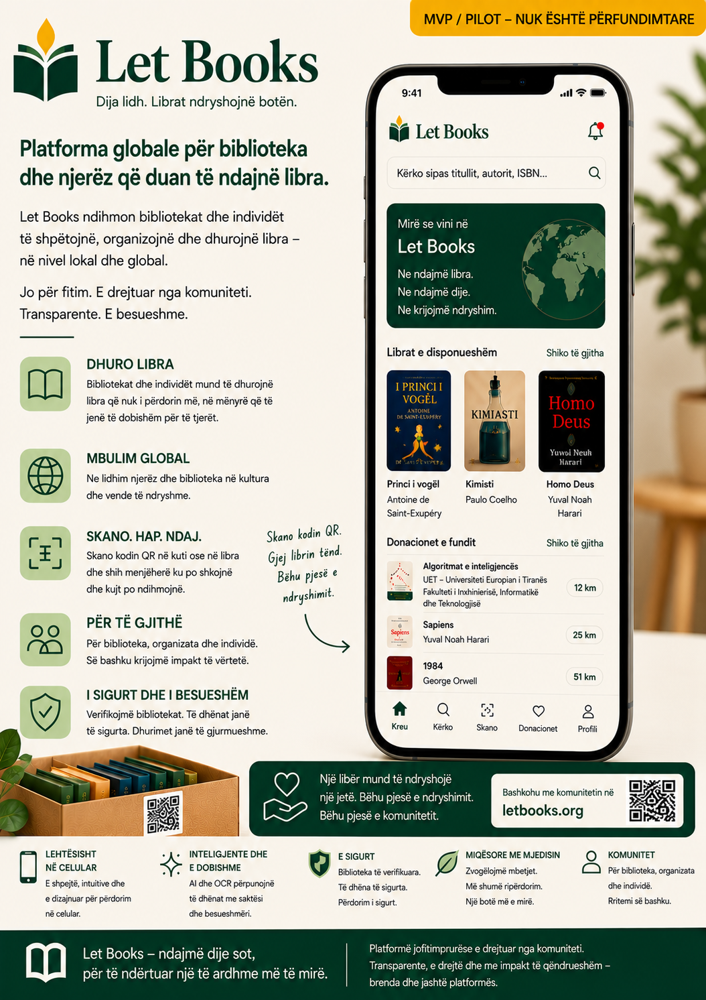

Njoftim për fazën e hershme alfa
Dokumentacioni, maketet dhe rrjedhat e përshkruara të punës janë ende në fazë të hershme alfa. Përmbajtja është e ndihmuar nga AI dhe mund të përmbajë pasaktësi, detaje të përkohshme ose drejtime të ardhshme.
Let Books ndihmon njerëzit, bibliotekat dhe organizatat e ardhshme pritëse të katalogojnë libra me vlerë, të shqyrtojnë donacionet dhe më vonë të gjejnë pikërisht kopjet që kërkohen.

Dokumentacioni, maketet dhe rrjedhat e përshkruara të punës janë ende në fazë të hershme alfa. Përmbajtja është e ndihmuar nga AI dhe mund të përmbajë pasaktësi, detaje të përkohshme ose drejtime të ardhshme.
Një titull mund të ketë shumë kopje fizike, secila me gjendjen, vendndodhjen dhe rezultatin e vet të donacionit.
Skano kutinë, shiko përmbajtjen, shto libra shpejt dhe më vonë përgatit marrjen pa hamendje.
Eksporto listën, mblidh vendime duam ose ndoshta, riktheji dhe krijo listë marrjeje sipas vendndodhjes.
Zgjidhni disa pika konkrete hyrëse nga blogu, materialet mësimore dhe faqet wiki.
Pse trajtimi i gjuhëve më të vogla ose rajonale si gjuhë të klasit të parë ndryshon kush mund të mësojë, të marrë pjesë dhe të kontribuojë.
Materiale mësimoreKy udhëzues shpjegon si të rishikohen përkthimet e gjeneruara nga AI në lidhje me kuptimin, terminologjinë, aksesueshmërinë, tonin dhe nevojën për rishikim njerëzor.
WikiLet Books është një rast studimor i gjallë në ndërtimin e një platforme njohurish shumëgjuhëshe dhe vizionit të produktit përpara se të ekzistojë një aplikacion i plotë backend.